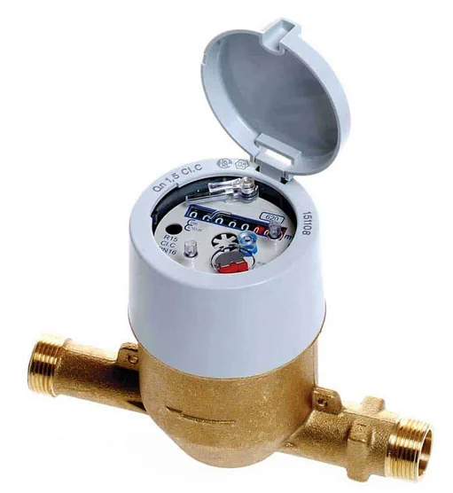
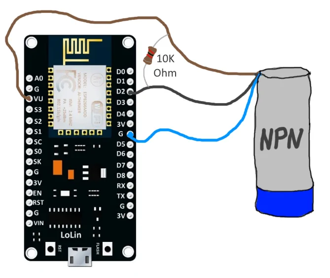
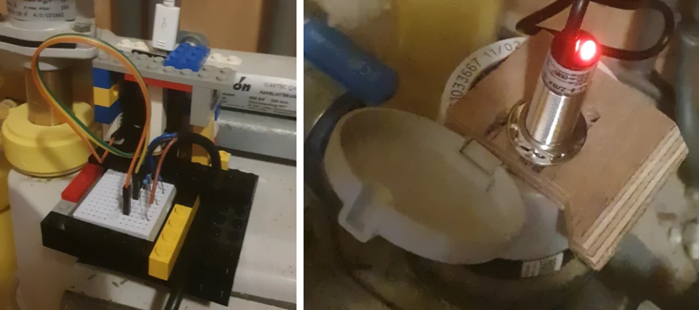
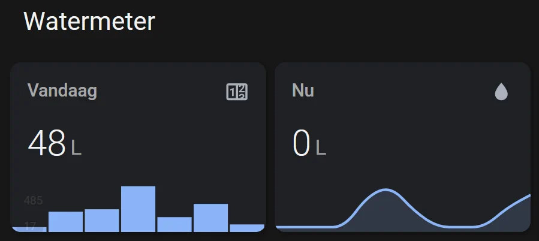

Measure your water usage in Home Assistant
2022-06-20
In the Netherlands we have smart utility meters for gas and electricity meters. They have a digital port that sends an update every 10 seconds. I measure our usage through the DSMR integration in Home Assistant.
Most watermeters, however, are still completely anologue. We have a Sensus 620, and I was interested in reading it out to get some insight in our water usage. This blog details the steps of how I automated it using Home Assistant.
{kind=link}

The sensor I'm using is an inductive proximity sensor (NPN). The idea is that every cycle of the metal plate the sensor is activated and sends out a pulse. The specific model I'm using is the LJ18A3-8-Z/BX - 5V.
I used this together with an old nodeMCU v3 (based on esp8266 board) I still had lying around. See the connection scheme below.
{kind=link}

I connected it all together using a breadboard and some jumper wires.
- The brown wire is connected to VU, which passes through th epower from the usb connection. There is no explicit 5V output on this board, but since the USB input runs on 5V, this works as well.
- The black wire receives the pulses and is connected to any of the digital ports (I used D2).
- The blue wire is connected to the ground port G.
- There is a 10k Ohm resistor between the brown and black wire that acts as a pull-up, which helps with ghost pulses.
Installing esphome
I setup the using ESPhome. ESPHome is a system to control esp8266 and esp32 boards using simple configuration files. Once you flash the boards, you can control and update them remotely through different home automation systems.
I first tried to set it up using the ESPHome integration in Home Assistant, but I ran into a bunch of weird issues. So I used the command-line version (which worked the first try!).
conda create -n esphome python=3.10
pip install esphomeFor nodeMCU v3 use board: nodemcuv2 (that's not a typo, apparently for v2+ all uses the same interface).
Below is the config I used.
# watermeter.yaml
esphome:
name: watermeter
comment: "Measure water cycles"
platform: ESP8266
esp8266_restore_from_flash: true
board: nodemcuv2
wifi:
ssid: "mywifi"
password: "badpassword"
fast_connect: true
logger:
api:
time:
- platform: sntp
id: my_time
sensor:
- platform: pulse_meter
pin: D2
name: "Water usage"
id: water_usage_per_min
icon: "mdi:water"
unit_of_measurement: 'L/min'
accuracy_decimals: 0
total:
id: water_usage_total
name: "Watermeter Total"
icon: "mdi:cube-outline"
state_class: "total_increasing"
device_class: water
unit_of_measurement: "L"
accuracy_decimals: 0This sets up the D2 pin as a pulse counter, that will be reported reported to Home assistant as water_usage_per_min (by default it reports the number of pulses per minute). It also keeps track of the total number of pulses under water_usage_total.
Save the config and compile it using:
esphome compile watermeter.yamlThe build file is in .esphome/build/watermeter/.pioenvs/watermeter/firmware.bin. I uploaded the binary using esphome-flasher from here.
You can test the sensor by holding a piece of metal near the blue part. The red LED will light up.
I built a little encasing using lego. To hold the sensor in place, I drilled out a 17 mm hole from a piece of multiplex, and two smaller holes to fit the holding pins on the sensor.
{kind=link}

Make sure to fix the IP of the water sensor, so it can be added to Home Assistant using the ESPHome integration. Afterwards, the setup was straightforward. The sensors were reported immediately. I added a utility meter helper that cycles every day to keep track of our daily use (water_per_day). And I set up a card in our dashboard.
{kind=link}

This is the code I used for the graphs:
type: vertical-stack
cards:
- type: custom:mushroom-title-card
title = "Watermeter"
- type: horizontal-stack
cards:
- type: custom:mini-graph-card
entities:
- entity: sensor.water_per_day
name: Vandaag
hours_to_show: 168
aggregate_func: max
group_by: date
show:
graph: bar
hour24: true
- type: custom:mini-graph-card
entities:
- entity: sensor.water_usage_per_min
name: Nu
hours_to_show: 24
hour24: trueThat's it! I already learned that we use between 70 and 100 L for our showers, and 400 L to water our garden!
Update for Home Assistant 2022.11
Home Assistant Version 2022.11 adds support for water meters in the energy dashboard.
To make this work, you will need to add device_class: water to the sensor. I have updated the example above.
If you don't want to reflash your esphome, you can also customize your sensor:
homeassistant:
customize:
sensor.water_usage_total:
device_class: waterRefresh your confg, and it should show up under the energy dashboard. 💦